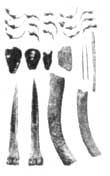
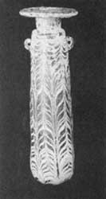
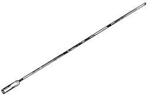
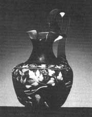
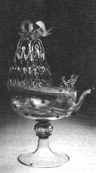
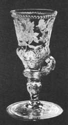
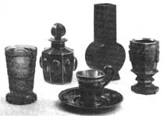

INTRODUCCIÓN |
|---|
|
Difícil es imaginarse hoy en día una sociedad que no utilice el vidrio. Todos nosotros lo conocemos por su fragilidad, su transparencia, su peso, sus diferentes formas y colores. Lo empleamos sin mayor problema, sabiendo que con un golpe no muy fuerte se puede romper.

La pieza de vidrio más vieja que se conoce es del año 4000 a.C., y consiste en una chaquira de piedra, cubierta de barniz de vidrio coloreado con algán compuesto de cobre, imitando así a la valiosa turquesa. La idea de falsificar piedras preciosas, que son difíciles de obtener de la naturaleza, ha existido desde entonces. Es como si fuera joyería de fantasía arcaica. A pesar de que la pieza fue encontrada en el territorio del antiguo Egipto, los expertos dicen que el vidrio fue fabricado por primera vez en Mesopotamia. Es curioso que las cosas más remotas sean siempre de ahí. Cuando nos preguntamos, ¿de dónde serán las cosas más antiguas? o ¿dónde se hicieron?, casi siempre la respuesta es Mesopotamia. Pero volviendo al vidrio, cuesta trabajo creer que algo tan frágil pueda durar tanto tiempo, porque la experiencia nos dice que un vaso que utilizamos difícilmente sobrevivirá 50 años sin romperse. Sin importar cómo, lo maravilloso es que hoy lo tenemos, y no sólo eso, sino que además existen piezas de vidrio que nos indican cómo se fue desarrollando la forma de trabajarlo.

De la misma forma en que no podemos imaginarnos un mundo sin vidrio, tampoco podemos pensarlo sin arte, ni concebir la evolución del hombre sin el uso de los metales. Por el año 200 a.C. aparece un tubo de hierro, conocido como la caña de vidriero (figura 3), que sirve para soplar el vidrio, y con él nace una técnica que ha permanecido casi intacta durante 2 000 años. Nada será tan importante en la historia del vidrio como este descubrimiento. La caña de vidriero fue utilizada por primera vez en Babilonia y después los romanos la adoptaron con entusiasmo. Está formada por un tubo de hierro de aproximadamente 1.5 m de largo, con una pieza para la boca en un extremo y una protuberancia para detener el vidrio blando en el otro. No es difícil saber cómo se utilizaba este aparato porque en la actualidad se sigue empleando de la misma forma. Una vez que el vidrio blando está detenido en la caña, se sopla dentro de un molde o al aire libre, y con una varilla se le va guiando la forma. Cuando la bola de vidrio blando adquiere la estructura deseada se corta con unas tijeras y cuando se enfría, se endurece. De esta forma se crean objetos fantásticos, fácil y rápidamente, a un precio bajo.

El manejo del vidrio por los romanos fue verdaderamente asombroso. Formaban hilos de colores, hacían rejillas, las fundían, las cortaban, las juntaban para finalmente volverlas a fundir, obteniendo resultados admirables. También resulta sorprendente la habilidad que llegaron a alcanzar en el uso de óxidos metálicos como colorantes. ¿Cómo lo descubrieron? No se sabe, pero ellos conocían las diferencias pequeñas en la composición que afectan drásticamente el color final. Por ejemplo, el cobre pasa de rojo rubí a verde; el cobalto siempre es azul intenso; el manganeso puede ser amatista o morado; el antimonio, amarillo; el hierro verde, café o negro; y el estaño, blanco opaco. Una de las piezas más bonitas que se conservan es la vasija Portland, fabricada en el siglo I en Roma; fue construida con un material oscuro al cual se le sobrepuso una capa de vidrio de estaño opaco. El vidrio fue esculpido, atravesado y cortado, para dejar unas hermosas figuras blancas en relieve contra el fondo oscuro. Esta pieza ha inspirado a muchos artistas a crear piezas de increíble belleza con la misma técnica (figura 4).

Además de elaborar obras artísticas con el vidrio, a los romanos se les ocurrió que el vidrio plano podría utilizarse en las construcciones, aprovechando su transparencia. Lo primero que pensaron fue en sobreponer en una superficie plana varias capas hasta formar un vidrio plano de 12 mm de espesor, aproximadamente. Buscaban este grosor porque querían evitar que se rompiera, pero esta misma característica le hizo perder transparencia y por eso decidieron ponerle colores y utilizarlo en la decoración. Así aparecen las pequeñas ventanas de color en los edificios del Imperio romano del siglo XII de nuestra era, y se olvidan por el momento del vidrio claro, plano y sin color, porque era extremadamente difícil de obtener.***********En Europa, la habilidad de los artesanos vidrieros decae después del año 200 d.C., resucitando tiempo después en Venecia, a través del contacto con el imperio romano oriental (bizantino). Los venecianos aprenden de los romanos, e incluso los superan con importantes descubrimientos, que guardan como los secretos más preciados. Su vidrio es un producto precioso que se vende bien y no tarda en enriquecer a la Serenísima. Para proteger sus inventos, todos los artesanos del vidrio fueron trasladados a la isla de Murano en 1291, donde además de estar incomunicados, les resultaba complicada la emigración. Venecia, desde el Renacimiento hasta el siglo XVIII produce esas maravillas descabelladas, dentadas, caladas, entalladas, de un vidrio tan claro, tan puro, que recuerdan el cristal de roca. Los venecianos copian también la piedra llamada venturina y la porcelana china: todo es juego para ellos. Escaparse de Murano, burlar a los vigilantes para marcharse a otro lugar, significaba pasar de simples obreros a prestigiados maestros en las vidrierías de Europa. El misterio de su sabiduría los hacía poderosos, y trataban de guardar su secreto celosamente, pues una vez que se descubriera, su dominio se desvanecería. Lamentablemente para ellos, no hay secreto que dure 1 000 años, y la mayoría de los conocimientos venecianos fueron difundidos en el siglo XVI.
 A pesar de que los ingredientes varían de un lugar a otro, la mayoría del vidrio producido en el pasado (como el de hoy) es de sosa y calcio. Esta combinación presenta muchas ventajas, como su estabilidad química, su razonable dureza, su fácil manufactura a temperaturas moderadas y su capacidad de reblandecerse el número de veces necesario para finalizar un artículo. En el siglo XVII se utilizó el potasio en lugar de la sosa, con el inconveniente de que se desarrollaba un laberinto de rajaduras que lo hacían inservible, pero poco tiempo después descubrieron que agregándole óxido de plomo se eliminaba este defecto. Se obtuvo así un vidrio de nitidez excelente (figura 6), suficientemente blando para ser cortado y grabado con facilidad, con mayor poder refractivo y que dispersaba más la luz. Esta propiedad se aprovecha para hacer telescopios, porque los lentes de sodio superpuestos con los de potasio permiten obtener mejores imágenes.

Una innovación importante en la historia del vidrio fue la creación de los hornos en los que se fundía la materia prima para que los artesanos hicieran las piezas; esto permitió que muchas personas pudieran dedicarse a esta profesión, y la producción creció de una manera impresionante. En estos hornos había una cámara de fusión y una zona relativamente fresca en la que se ponían vasijas de vidrio fundido y refinado para mantenerlas con cierta viscosidad, hasta que los artesanos las utilizaran para decorarlas o moldearlas.

En el siglo XIX surgen dos inventos importantes. Uno es la manufactura mecanizada, que empezó en 1821 cuando se hizo el moldeado dividido. Gracias a éste se podía soplar una botella en dos partes para después unirla. Sesenta años después las botellas se hacían en máquinas semiautomáticas, y hoy en día se utiliza esta misma técnica para elaborarlas. |
|
|
|
|
|